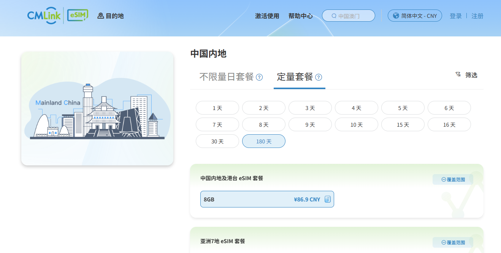

流量低至 3.5 CNY/G
买 eSIM 不要只看套餐总价，更要看每 GB 成本。esimka.top 漫游流量低至 3.5 CNY/G，适合长期备用、高频跨境上网和热点共享。
Mainland China Usable eSIM
低至 3.5 CNY/G，24 小时自动发货，香港 IP + 香港号码可接短信，多出口原生 IP，支持热点共享，也给不支持 eSIM 的设备留了实体卡转换路线。
Positioning
esimka.top 面向中国内地用户、跨境用户、旅行用户和远程办公用户。核心价值是把 eSIM 变成一个随时可开、价格清楚、线路灵活、可热点共享的移动数据工具。
买 eSIM 不要只看套餐总价，更要看每 GB 成本。esimka.top 漫游流量低至 3.5 CNY/G，适合长期备用、高频跨境上网和热点共享。
面向中国内地使用场景，适合作为传统 VPN、公共 Wi-Fi 之外的移动数据方案。到达或启用后按套餐说明打开数据漫游即可使用。
支持香港 IP 和原生国外 IP 场景，让国际应用访问、港区服务、跨境账号和海外内容环境更自然。
香港 IP 套餐可搭配香港号码短信接收能力，适合账号验证、港区应用登录和备用通信。具体短信能力以套餐页面说明为准。
减少开通步骤，不想上传身份证的用户可以优先关注这类套餐。购买和使用仍需遵守所在地法律法规、运营商规则与平台条款。
下单后自动交付，适合临近出发、机场补卡、临时备用网络，不用等待人工处理或实体卡快递。
手机开热点后，电脑、平板、备用机都能连接。对远程办公、旅行、团队临时网络和备用线路很实用。
支持 eSIM 的手机可直接安装。不支持 eSIM 的设备，可搜索 eSIM 转实体卡方案，购买前和商家确认机型、写卡和套餐兼容性。
不只是一个出口。可按需求选择香港、澳门、台湾、日本、韩国、美国等原生流量出口，适合不同 App、账号和地区内容场景。
相比先连本地网络再开 VPN，eSIM 漫游数据直接走移动数据链路，本地网络侧痕迹更少；需要断开时，飞行模式一开就断。
Price Proof
自然流量宣传最适合用“每 GB 成本”做钩子。价格、覆盖和套餐规则会变化，最终请以套餐页面为准。
适合备用网络、高频使用和热点共享。
20GB / HK$81，按汇率估算。
8GB / 180 天 / 86.9 CNY。


Native Exits
不同应用、账号和内容平台对网络环境敏感度不同。多地区出口可以让用户根据需求选择更合适的网络入口。
Use Cases
FAQ
不是。香港号码短信能力需要看具体套餐说明，购买前请以页面标注为准。
不是。不同套餐可能是原生 IP、漫游 IP 或其他出口。建议安装后检查 IP 显示位置。
不是。它可以减少本地网络侧访问痕迹，但运营商、平台账号、设备系统、App 权限、支付方式和所在地法律要求都可能影响隐私与可追溯性。
可以搜索 eSIM 转实体卡方案，确认设备、写卡工具和套餐兼容后使用；也可以用支持 eSIM 的备用手机开热点。
24H Auto Delivery
低价流量、中国内地可用、香港 IP + 香港号码短信、多出口原生 IP、热点共享、免国内实名流程和 24 小时自动发货，是这套方案的核心卖点。